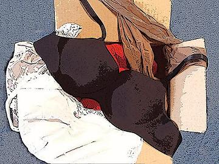

T. S. Kerrigan
Finalities

He wakes at dawn to find she’s fled,
Forgetting all her odds and ends,
En route to someone else’s bed.
By eight he’s boxed her lingerie,
The padded bras and filmy slips
She left in utter disarray,
The sweaters put away for fall
In umber, yellow, mauve and red
She always bought a size too small.
The pair of slinky boot cut jeans
(for one who rarely wore a skirt)
You see in all the magazines.
He almost keeps the satin sheath
(And silken skirt in pale ecru)
She wore with nothing underneath.
When truck and driver disappear,
He goes inside, relieved to see
The business done, and pours a beer.
It’s then, and only then, he knows
He can’t pack up old memories
As easily as panty hose.
Aubade
With both their spouses still asleep indoors,
They leisurely retrace their steps last night
Beneath conspiring oaks and sycamores,
Like kids, their arms entwined in early light,
Where daffodils emerge beneath those trees.
They find their special bench again, grown shy
Before the changing light, the morning breeze,
Who were so bold beneath a darker sky.
Intrusive dawn confronts them with their lives.
Unconsciously their hands unclasp, they start
To count the hours they’ve wasted, what survives,
Of all their years together, years apart,
Then shuffle back, regretting vanished things,
The heedless squandering of all those springs.
T.S. Kerrigan is the editor of The Raintown Review and the author of My Dark People, the largest collection of his work to date, due next month from Central Avenue Press in New Mexico. His verse has appeared in leading magazines on both sides of the Atlantic.
|